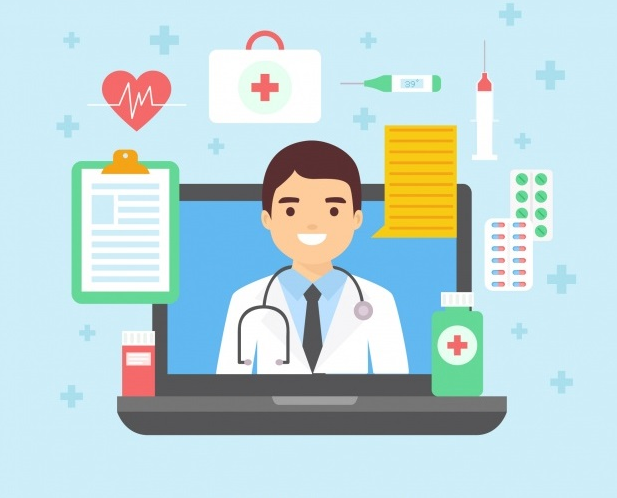

Вас приветствует проект Телемедецина!
Вас приветствует проект Телемедецина!
Телемедицина - это распространение медицинских услуг и информации с помощью электронных информационных и телеком- муникационных технологий. Она позволяет пациентам и врачам на расстоянии контактировать, давать советы, обучаться, вмеши- ваться, производить мониторинг и вести дистанционный прием.

На сайте проекта вы можете узнать результаты проведенных анализов и прочих исследований. Также вам доступна возможность ведения дневника здоровья и врачебная консультация. Нажмите на кнопку авторизация для входа или регистрации для получения данных возможно- стей!